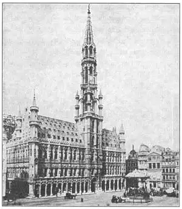
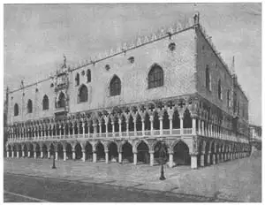

76
HERE AND THERE
欧洲各地

I KNEW a man who spent one summer going on a bicycle from one place in Europe to another, seeing the sights. He was a young American architect and he wanted to see as many famous Gothic buildings as he could and get some exercise at the same time. He traveled eleven hundred miles on his bicycle. But when the summer was almost over he found there were certain buildings he very much wanted to see that he hadn’t had time to reach, especially as they were all in different parts of Europe. So he sold his bicycle and took airplane trips to these places, He traveled farther by airplane in a few days than he had by bicycle in three months.
First he flew to Cologne in Germany. Cologne sounds like a perfume, but it is a big city famous for its huge Gothic cathedral. Cologne Cathedral is the largest Gothic church of northern Europe. The spires are five hundred feet high—as high as ten three-story houses.
Cologne Cathedral was begun in 1248 and it took a very long time to build. It wasn’t finished till 1880, more than six hundred years later. But that was better than many cathedrals, which were not finished at all and never will be now.
Cologne Cathedral is so wide for its length that to many people it doesn’t seem as beautiful as the French cathedrals. Its twin western towers with their tall spires are so big and bulky at the bottom thai they make the rest of the building look smaller than it is. The proportions of one part of the building compared with another are not as fine as they might be. This means the building doesn’t look just right as a whole, although each part by itself may be correctly and splendidly made. Of course the young architect knew these faults, but he could forget the cathedral’s imperfections as he gazed with awe at the thousands of carved stone figures, the pinnacles, towers, and flying buttresses that make this building one of the best known in the world. It is magnificent, huge, impressive.
From Cologne my friend flew to Antwerp, in Belgium. There he went to see the most impressive church in Belgium—Antwerp Cathedral. This cathedral has a place for two towers on its western front, but only one tower is there. The other one was never built. Where it might have been is just a little steeple.
The one big tower rises high in the air and becomes narrower at the top, like a spire. It has so much stone carving on it that it looks like lace-work made of stone. The tower is graceful, but the lacy look seems a little too fancy. Probably Antwerp Cathedral really looks better for having only one tower. Two towers might have made the building seem mostly towers, like Cologne Cathedral.
This is just one of the many beautiful towers in Belgium. Many of them are not on churches at all but stand by themselves. They are often called singing towers because the bells inside ring out beautiful music. Singing towers were often useful as well as beautiful. The peal of the bells called the people together, spread an alarm in time of danger, and rang out in triumph to announce good news. Belgium can be proud of her beautiful Gothic towers.

No.76-1 TOWN HAIL BRUSSELS（布鲁塞尔市政大厅）
Besides the singing towers there are many other Gothic buildings in Belgium that aren’t churches. Gothic architecture suits churches well because it seems to be trying to reach up to heaven. The most beautiful Gothic buildings are churches, but many of the other Belgian Gothic buildings are beautiful too. Naturally, these buildings would not be shaped like a cross. Some of them have towers and spires like churches and some have not. Some were built by the towns for town halls where the public business was carried on. Some were built as club houses, or headquarters, for gilds. Each kind of trade or business had its own gild, or band of skilled workers. There were gilds of stonemasons, goldsmiths, ship captains, merchants, butchers, bakers, and candlestick makers. Of course each gild wanted its own club house. Some of the Belgian gild houses show very beautiful Gothic architecture.
Many of the Gothic town halls and gild houses had steep roofs with rows of dormer windows. You know, a dormer window is the kind that sticks out of a sloping roof. The Cloth Hall at Ypres was one of the most famous of the Belgian buildings of the Middle Ages. But my friend the architect got to Belgium too late to see it. It was burned down during World War I.
“From Belgium,” the young architect told me, “I took a plane to Spain. I wanted to see the largest Gothic cathedral in the world. It is in the little Spanish town of Burgos. The twin towers with their tall spires reminded me a little of the towers of Cologne. There is a big eight-sided tower in the middle, besides the two spires at the end. Around the cathedral at Burgos are cloisters, chapels, and an archbishop’s palace.”
Burgos is in the northern part of Spain and is more like French and German cathedrals than the Spanish churches farther south. The Moors from Arabia had long ruled the south of Spain and the Gothic cathedrals there have many details that were suggested to the Spanish builders by the Moorish buildings. In another chapter I’ll tell you about these Moorish buildings.

No.76-2 THE DOGE’ S PALACE, VENICE（威尼斯总督府）
Now for a quick trip across the Pyrenees, across France, across the Alps to Italy. My friend knew what he wanted to see there—the Gothic buildings of Venice.
On the square of St. Mark stands the Cathedral of St. Mark with its five domes and Byzantine architecture. Next to St. Mark’s on the square stands a long building four stories high. It is called the Doge’s Palace. The Doge was the duke and ruler of Venice. The palace of the doges is Gothic (notice the pointed arches), but it is quite different from all other Gothic buildings. The two lower stories have long rows of the pointed arches on columns. Rows of arches like these, you remember, are called arcades. The arcades form covered porches around the Doge’s Palace.
The upper hall of the Doge’s Palace has flat walls of pink and white marble in a pattern. The flat upper half of the walls makes the fancier lower half look better, in just the way an old automobile makes a new one look newer. If more of the Doge’s Palace was like the upper part it would be too plain. As it is the whole building makes a beautiful part of the beautiful square of St. Mark.
Other smaller palaces and houses in the Gothic style can be found in Venice. You have to take a boat to see them, for most of them are on streets that are made of water. A boat can take you right up to the water steps leading to the front door. That’s what my architect friend did. He took a boat called a gondola and saw all he could see in the three days he had left before he had to sail for New York. On his trip home across the Atlantic he pasted in an album the photographs he had taken and he was glad that airplane traveling had let him get the pictures of—
Cologne Cathedral
Antwerp Cathedral
A singing tower of Belgium
A Gothic gild hall
The cathedral at Burgos
The Doge’s Palace
Some small Venetian palaces
And … a gondola.
【中文阅读】
我认识一个人，他花了整整一个夏天，骑着自行车，在欧洲各地穿行观光。他是一位年轻的美国建筑师。他希望能看到尽可能多的哥特式建筑物，并得到某些身体锻炼。他骑了一千一百英里远。当一个夏天都快结束时，他发现还有几处非常想看的建筑物还没去，但时间却不够了，更有甚者，这些建筑物分布在欧洲的不同地区。所以 他卖了自行车，改乘飞机前往那些地方。他乘飞机在几天里所旅行的距离要比他骑车三个月远得多。
他先飞往德国的科隆。科隆听起来像是一种香水的名字，但它却是以哥特式大教堂而闻名的一座大城市。科隆大教堂是北欧最大的哥特式教堂。教堂尖顶高500英尺——相当于三十层楼的高度。
科隆大教堂始建于1248年，花了很长时间才建好。直到1880年，即六个世纪之后才完工。但这要比许多从未造完‘也不会再建的半拉子大教堂好多啦。
科隆大教堂就其长度来说显得太宽，所以在很多人看来，它就没有法国的大教堂那么好看。它西边的双子塔的尖顶很大，底部很笨重，使得建筑物的其他部位看上去偏小。教堂各个部分的比例并没有预想的那么协调，这就意味着建筑的整体看起来并不怎样，尽管各个部分都精确华丽。当然，这位年轻的建筑师也看出了这些缺陷，但当他看到成百上千的人物石像、小尖塔，以及使其闻名于世的飞扶壁时，他惊呆了，浑然忘却了这些缺陷。它是那么高大、壮观、令人难忘。
我这朋友从科隆出发，到达比利时的安特卫普。他去那儿看了比利时最让人流连忘返的教堂——安特卫普大教堂。这座大教堂的西边正面有个位置可以建造两座塔，但实际上只建了一座，另一座一直没建。这里也许曾经建过一个小尖塔。
这座独一的塔很高大，直耸云霄，顶端缩小，形成尖顶状。塔身刻有许多石雕，像石头刻出的花边。塔形优美，但花边看上去似乎有点花哨。安特卫普大教堂可能就是因为只造了一座塔，反而更加中看。要是造了两座塔，就会使整个建筑物全是塔了，就像科隆大教堂那样。
这个塔只是比利时许多美观的塔的其中之一。有很多塔并没有建在教堂上，而是独自矗立。它们常被叫做“歌塔”，因为塔里的大钟会奏出美妙的音乐。歌塔不但美观，而且实用。响亮持久的钟声将人们召集到一起，在危机时刻发出警报，在胜利之时宣告好消息。比利时人为自己拥有美丽的哥特式塔而感到自豪。
除了歌塔，比利时还有许多其他非教堂哥特式建筑。哥特式建筑很适合教堂，因为它给人一种直耸云天的感觉。所以最好看的哥特式建筑就是教堂了，但比利时还有许多其他好看的建筑。当然了，这些建筑并不是十字形建构。有些像教堂一样有塔、尖顶，有些则没有。有些是由城镇出资所建的市政大厅，供市民办理公共事务。有些是行会建的俱乐部或总部。各行各业都有自己的行会，或技术工人团队。譬如石匠行会、金匠行会、船长行会、商人行会、屠夫行会、面包师行会，以及烛仟工行会。当然，每一种行会都希望能够拥有自己的会馆。比利时有些会馆是非常漂亮的哥特式建筑。
许多哥特式市政厅和会馆都建有斜屋顶和一排排天窗。你知道吗，屋顶天窗是一种建在陡峭屋顶上伸出来的天窗。位于伊普尔的克劳士厅是中世纪比利时最著名的建筑之一。但我那位建筑师朋友去得太晚了，因为它在第一次世界大战期间就被烧毁了。
“我从比利时出发，”这位年轻的建筑师告诉我，“搭乘飞机去西班牙。我想去见 识一下世界上最大的哥特式大教堂。它位于西班牙的布尔格斯小镇。它那高耸的双子尖塔让我有点想到了科隆大教堂的塔。它除了在末端有两个尖顶外，中间还有一座八边形高塔。布尔格斯大教堂的周围建有修道院、礼拜堂以及一座大主教宫殿。”
布尔格斯在西班牙北部，但布尔格斯大教堂与偏南的西班牙教堂比起来更像是法国和德国的大教堂。来自阿拉伯的摩尔人长期统治西班牙南部。在西班牙人眼里，哥特式大教堂的许多细节都来源于摩尔人的建筑风格。关于摩尔建筑我会在其他章节再作介绍。
我的朋友迅速穿越了比利牛斯山、法国和阿尔卑斯山，来到意大利。他知道到这里来是要看什么——威尼斯的哥特式建筑。
圣马可广场上矗立的圣马可大教堂，呈拜占庭风格，上有五座圆顶，旁边有一座有四层楼高的长形建筑物，是总督府。总督是当时威尼斯的统治者，由亲王担任。总督府虽也是哥特式建筑（注意一下尖拱），但它与其他所有哥特式建筑物都不一样。总督府底下两层的柱子上方有一排排长长的尖拱。你还记得吗？像这样一排排的拱门，叫做拱廊。拱廊形成拱门游廊，环绕着总督府。
总督府上层大厅的墙壁是用粉白色大理石按某种图案砌成的平面墙壁。墙壁的上半部的扁平，更加衬托出墙壁下半部的美妙。单用这种方式，一辆新车可以在旧车的存托下，显得更新。如果总督府大部分墙面都呈上半部的平面状，那就太死板了。正因为如此，这座总督府也成了美丽的圣马可广场的一道风光。
在威尼斯还可以看到其他较小一点的哥特式宫殿和房屋。不过你得要坐船观赏，因为大多数建筑物都建造在水道旁。小船能把你带到建筑物的门前台阶上。我的那位建筑师朋友就是这么做的。他搭了一只小划船，在三天内游遍了所有想看的地方。他三天后返回美国纽约。他在途径太平洋时，把拍摄的照片贴在相册上。他很庆幸后来改乘飞机才拍摄到下面这些建筑物的照片——
科隆大教堂
安特卫普大教堂
比利时歌塔
哥特式会馆
布尔格斯大教堂
总督府
威尼斯的小型宫殿
还有……小划船